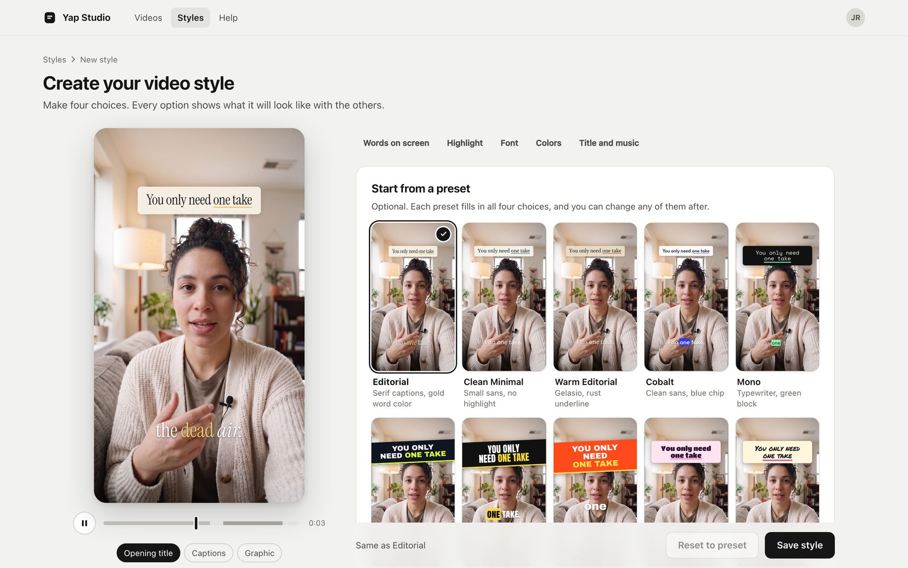
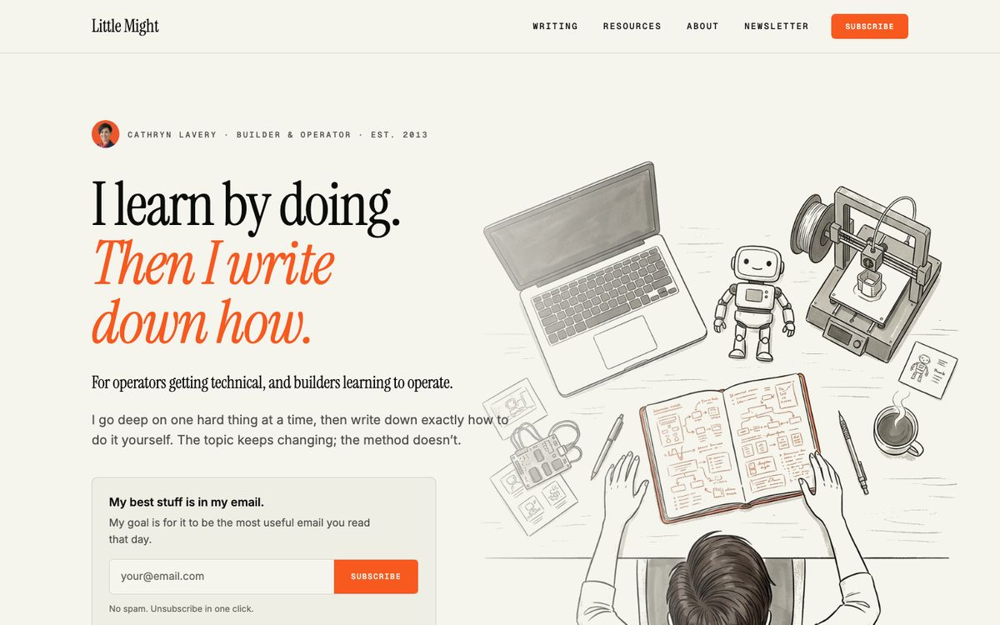
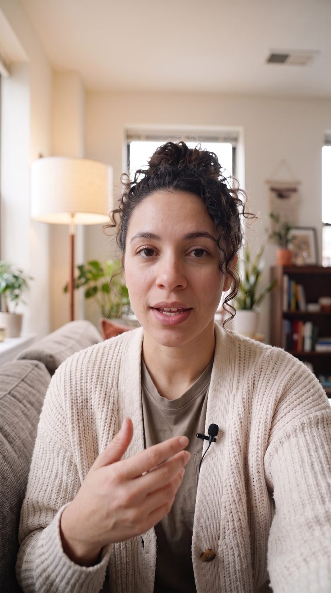
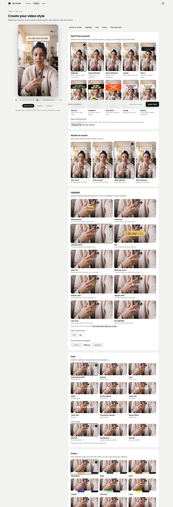
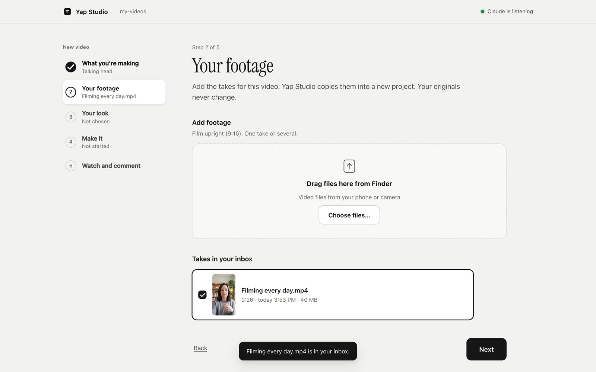
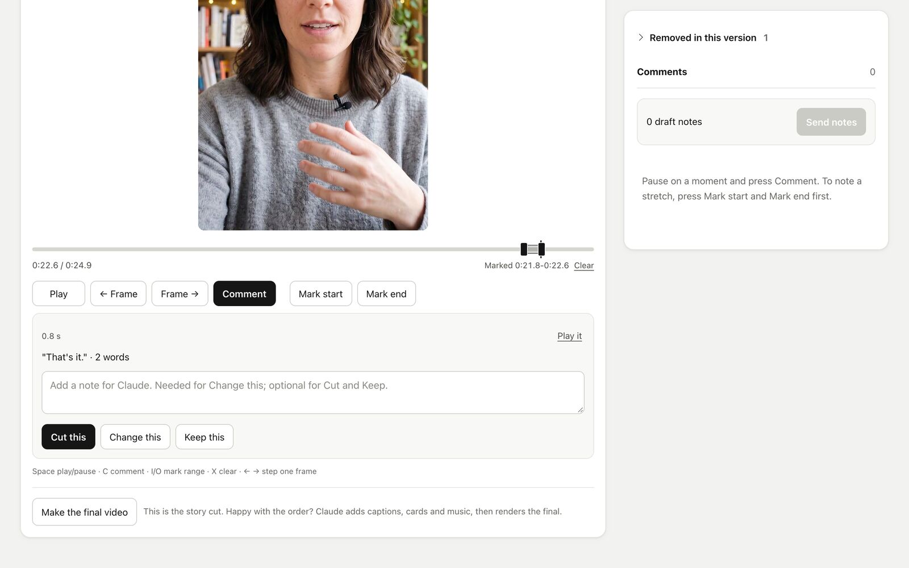
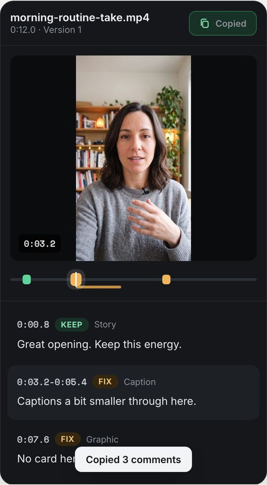

You like recording. Editing is the part that stops you.
Drop in your raw takes, stumbles and all. An agent cuts the dead space and restarts, adds your captions and cards, and checks the video before you see it. You leave notes from your phone, and the next version follows them.
For Mac · Open source · Available now
Open source · Built on HyperFrames · Runs on your own computer
Videos posted this month0

The whole editDo one takeCut the dead airPost it


Fix 0:01.2
Get it. Then give it a take.
You need a Mac with macOS 14 or newer, about 10 GB free on a local disk, and an app that can run the edit on your Mac.
Download the workspace
Get the workspace ZIP from the latest release. Choose
yap-studio-workspace-<version>.zipand unzip it into a folder on this Mac, outside folders that sync to the cloud.Open it in your agent app
Use Claude Code, the Claude app's Code tab, Codex, or Cursor. Open the folder you just unzipped. The usual chat window can't edit videos.
Type
set me upYour agent asks before each install. The first setup downloads the speech model (about 2.5 GB) and video renderer, then opens Yap Studio in your browser.
How to open the folder in each app
- Claude Code in Terminal: change to the unzipped folder, run
claude, and sign in once with/login. - Claude app: click Code, choose Local, then Open folder. Sign in on a paid plan.
- Codex in the ChatGPT app: choose Codex, add a project, then Use an existing folder. Trust it once. Or run
codexin that folder with the Codex CLI. - Cursor: File > Open Folder, then Cmd+I. Use Agent mode on this Mac. Privacy Mode is suggested.
Then type set me up. Setup uses Homebrew and offers to install it if needed.
Prefer to install from Terminal?
You need Python 3.11+, uv, ffmpeg 6.1+, and Node.js 22+. On your Mac, run:
brew install uv ffmpeg node@22
uv tool install 'yap-studio[asr,mcp]'
yap-studio renderer install
yap-studio speech download
yap-studio doctor --editYap Studio is free and open source. You need access to your chosen agent app. Read the README and get the source on GitHub.
Camera rollNot edited yet
0:42
1:18
0:57
2:03
0:38
1:44
0:51
1:09
For every take still sitting in your camera roll.
You film when you feel like talking. Then the editing waits, and the takes pile up. Put them in the Yap Studio inbox and each one comes back finished, in your style, ready for your notes.
- You love recording and hate editing.
- The edit takes longer than the video ever will.
- The first take has dead space, stumbles and a restart or three.
- So the video never gets posted.
From your phone to a finished video.
Once setup opens Yap Studio in your browser, here's the whole edit.
Bring over your clip
Move the raw clip from your phone to your Mac. Choose talking head or voiceover, then drag your takes onto the footage page or choose files. Your originals stay untouched.
Pick your look
Choose the captions, font and colours on a still from your own take.
Press Make my video
The agent cuts the pauses and restarts, adds captions and cards, and checks the result. In Codex or Cursor, tell the agent in chat that you pressed the button.
Watch it and leave notes
Mark a stretch and choose Cut this, Change this or Keep this. When the story is right, press Make the final video. You can review on your phone over the same Wi-Fi or Tailscale.
Keep the version you like
Approve the final, then open it on your Mac, show it in Finder, or download it. Post when you're ready.


Real screens from a full run with a generated sample presenter. See the full walkthrough.
Cards and effects that land on the word.
The agent picks from a library of ready-made HyperFrames blocks and times each one to the words it's about. Swipe through what it can do.
Words behind you
Big words sit behind your head, cut around your outline.
Something behind you
You step aside and your website or a page fills the frame behind you.
- Videos posted this month0
Numbers that count up
The number climbs while you say it.

Over your shoulder
A screenshot or clip in a box while you keep talking.
- The whole editDo one takeCut the dead airPost it
Checklist
Each item ticks as you say it.
Cutaway
Full screen to your screen recording, with a light leak in and out.
- Raw takeFinished
Before and after
A wipe from one to the other.
Also in the library Sign · Photo in a window · From here to there · Light leak · Whip pan · Zoom
Sample videos made for this page. In your videos, cards use your fonts and colours and stay clear of your face.
Your own footage, where it fits.
Drop in screen recordings, screenshots, pages from your site and photos from your camera roll. Yap Studio catalogues them privately on your computer, so the agent knows what's in each one and cuts to it while you talk about it.
Your B-rollCatalogued on your computer
- 0:14
Screen recording: setting up a caption style Used at 0:06, full screen
Screenshot: littlemight.com Used at 0:02, behind you
Phone screenshot: review notes Used at 0:04, over your shoulder
Photo: your filming setup Not used yet
Your notes become your taste.
After each round, the agent suggests rules from your notes. You approve, reword or reject each one. Approved rules apply to every video after that, so each one needs fewer notes. It can also start from videos you've already posted.
Rules for future videos
Smaller captions
From your notes on video 3No card while I'm making a point
From your notes on video 3Open on the point, no warm-up
From videos you've already postedOne caption line at a time
From your notes on video 1Checked before you see it.
A second agent watches every render first and flags weak spots, shown apart from your own notes. Then Yap Studio checks the video itself. A version that fails never reaches you.
- FlaggedReview agent: the pause before “Then” runs long.
- FixedTightened the pause before “Then”.
- CheckedEvery join, lip sync, every frame, loudness for posting, and every caption, title and card layer.
- ReadyVersion 2 is ready for your notes.
Get updates from Yap Studio.
New releases and notes on what I'm making with it. You can get Yap Studio now.
Open source · Built on HyperFrames · Runs on your own computer